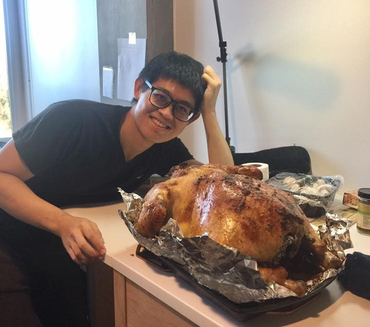

Researcher, builder, and a very serious home cook.
I work at the intersection of GenAI, computer vision, and deep learning, with a focus on building practical systems that reason well in domain-specific settings.
Background
I received my PhD from the University of California San Diego (UCSD) in the Statistical Visual Computing Lab (SVCL), where I was advised by Prof. Nuno Vasconcelos.
My research interests include GenAI, computer vision, and deep learning. I was a research intern at Mitsubishi Electric Research Laboratories (MERL) and Amazon AWS AI. Before joining SVCL, I received my master's degree in UCSD CSE and my bachelor's degree from National Chiao Tung University in Taiwan.
Before joining UCSD, I worked as a research assistant in the Computer Vision Research Center at NCTU. I was also an exchange student at the University of Illinois Urbana-Champaign during my junior year and a research intern at Cornell University.
Beyond Research
When I am not coding, I am a great cook. I enjoy making Chinese cuisine for friends, and every Thanksgiving I roast turkey.
Kitchen Moment
